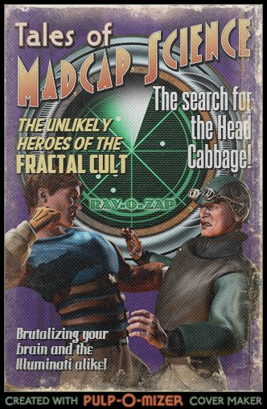

by Cramulus

by Cramulus

by Cramulus
The Society of the Spectacle has its demands too
It demands your attention.
It demands that you state your position in the form of a sound-byte which can be re-contextualized by another sound-byte.
It demands a remake of yesteryear’s summer blockbuster, the one with the hairy hippies on drums and mud, but with this year’s celebrities.
It wants to roll up your energy and sell it to kids on the street corner in a dime bag they have to hide from their parents.
It demands that you smoke that energy in secret and get all excited, fuzzy headed, forgetful, then you want more, and it’s got some, but the next hit’s gonna cost you.
It demands a glass jar full of passion, on display, so we can see the passion through the glass without getting any on our hands.
It demands that by end of the episode, we return to the nuclear sitcom family you saw in the opening credits.
It demands that you stop bringing up its disease, because that is embarrassing to both parties.
It demands your attention to these issues right now, before it listens to you.
It demands that you stop talking over it.
Reality
We humans always had to live with the fact that reality reaches beyond what our senses are able to percieve directly, that there are things determining our lives, even though we can not see, hear or feel them. Previously these things were angels, spirits and divine powers, magic spells, goblins, aether and hell. Today, we have X-rays and bacteria, we have magnetic fields, dioxin and quarks, files, the 4th Dimension, book money and brain waves.
 All these things we can not perceive directly, and yet we believe they exist and are even dependent on them.
All these things we can not perceive directly, and yet we believe they exist and are even dependent on them.
In the past, alchemists searched for a way to turn base metal into gold. Today, we could do it, but we know that it is not worth it and already have found other ways to refine things.
Today we know that every part of the universe may contain information about every other part, the part affecting the whole and vice versa. So why shouldn’t magic work then?
We have rediscovered ancient, alchemical principles in a new form; for example the the old magical principle “As above, so below” still lives on today in the principle of fractal self-similarity.
The transitions between past and present, between magic and science, between faith and knowledge are fluid. The scanning electron microscope revealed to me the landscapes of Paradise, and if I put my bank card in the machine, the number of archangels currently looking down on me is revealed.
My microwave is a holy, even magical cult object.
(Translated from one of my oldest Discordian Writings on Zimmer 523 - that shit is more than 10 years old I guess, and it didn’t improve over time. ^^ )

Apples
If you know your bible stories - and who doesn’t know this one - you know that in the garden of Eden, a serpent coaxed Eve and Adam into taking a bite from an apple from the tree of knowledge, for which they were banished from the garden and thus society happened.
I discovered a cute coincidence with the Latin language today. The word for apple is malum. From this we get malic acid, which flavors green apples and white wines, and malus, the apple tree.
Malum and malus are also words for evil, misfortune, and bad things of all sorts. Talk all you want about anti-intellectualism in the Abrahamic faiths, that’s old hat.
Malus is also a root for the name Malaclypse.
Malaclypse the Younger wrote a little tome of faith and philosophy (of dubious quality and appeal) called the Principia Discordia which I’m sure we’re all familiar with. He reminded us of Eris and chaos and discord - all of that fun stuff. He gave many great knowledge (and many more very suspect knowledge, but let’s not hold that against him). Whether we like it or not, he established the language of Discordianism - eristic, aneristic, hodge/podge, and the symbolism of the golden apple.
Again, we see the apple as a thing of knowledge. In the Greek and Discordian myth, Eris’s golden apple brought knowledge of chaos and what happens when you ignore it.
The truth is thus laid clear before us.
Malaclypse the Younger was not a man. Malaclypse the Younger was an apple tree.
I hope he dropped some tasty apples.
Discordianism: A Brief Explanation
Only spags and cabbages take vows of silence
Discordians take VOWS OF CAPSLOCK
fractalcult:
One of the things I love best about Discordja, is that it’s like a mirror you can hold up to reflect how stupid things are.
When somebody says “We tolerate all religions”, it makes me wonder if they have an immune system to protect against cults, hate groups, and people that…
Discordianism in One Sentence
“Butts butts butts for my Lady”
Question: How do we know when we are breaking the fourth wall?
Cramulus Answer:

Here’s the second part of the Law of 5s: {spoiler alert}
If you look for 5s, you find 5s. But let’s be clear, there is *nothing* mystical about the numbers 5 or 23. If we had six fingers, it would be called the law of sixes. Those numbers are just a way of teaching you about “confirmation bias”. When you go hunting through the Chaos for a signal, you will find that signal.
If you look for evidence that people are shitheads, you will find it. If you look for evidence that people are awesome, you will find it.
A lot of people are miserable because they hunt for reasons to be miserable. They keep finding confirmation for their belief that people are worthless and the world sucks. But a lot of people are having great adventures every day because they have learned to see them everywhere.
A friend of mine saw a pack of pingpong balls and a sharpie and he saw something we didn’t. He sliced the pingpong balls in half and drew eyes on them, poked out a hole in the pupil to see through, then jammed them onto his face. Fucking hysterical, we were giggling for hours drawing different eyes and making faces at each other. We could take a lesson from him, that’s some high level monk shit.
two very useful links on this topic:
http://en.wikipedia.org/wiki/Confirmation_bias
http://deoxy.org/wiki/The_Thinker_and_the_Prover
The Age of Cancer - The Far Shore of Madness
A missive from Saint Amir Zetathustra, Heretic
Amir strode through the Theater in his holy garb (which he could no longer put through a washing machine after finally attaching the studs like he’d meant to, though there was still an ugly blood stain on the sleeve from where he’d wiped a nosebleed last June). He saw the Mosh, and saw that it was Pretty Crappy, As Usual, so he abstained and went to the bar for overpriced bourbon shots and the wisdom of wine. There, he met a sage who could not stay on his stool, instead preferring to clutch tightly to the bar. Amir listened while the sage spoke to a few wary followers.
“The age of Aquarius is not coming; we’re coming up on the age of Cancer.
I mean, look at it - cancer everywhere! Your bed might give you cancer. The things used to make your phone will give you cancer. City’s tearing down an old building near your house? Good luck not getting cancer!
There’s cancer in your food, cancer in your genes, cancer in everything, everywhere.
Big Money is, as we all know, tied to the Illuminati, or if I am to reveal their True Name, the OBSCURA!!!, the Slavers and Obscurers of Old Atlantis. They’ve been running guns to keep our claws sharp, keep us hiding in our armored shells instead of coming out and connecting and loving and feeling the Sun - the truth and the light and the bringer of life itself - on our skin. Now they seek to wither us in our shells with their cancers, boil us up, and eat us for dinner! And without even the courtesy of garlic butter and white wine!
A few Bringers of Light and Truth in Europe figured out what was going on, and they’re banning the Industrial Cancers, but at a cost. Their fears and efforts drive them further into their shells - a long life, never seeing the sun.
In America, the state of California is doing its part to warn us all. "THIS PRODUCT IS KNOWN BY THE STATE OF CALIFORNIA TO CAUSE CANCER.” We owe them our lives - we’d all be Sickly Slaves to the Obscura Illuminati by now.
But still, cancer is spreading, and Cancer is coming. The Great Crab grows power as Its followers worship. We can only delay, as things are, not change our fate or prevent the Crab’s Reckoning.
The solution?
Get paranoid.
Get really paranoid.
Grow and foster and feed your paranoia and fear and let it blossom into madness. Cross the line into madness, and forge on.
When you come to the Far Shore of Madness, you will see the Great Crab, and you will know what you must do.
What must you do? Fucked if I know, man, I’m just the janitor.“
The sage’s companions left for the Mosh, scoffing at their friend’s words. But Amir saw the strange wisdom in what had been slurred, so he bought the sage another beer.
The sage threw up on Amir’s shoes and was promptly removed from the building.
Amir felt enlightened.
PER METUM AD INSANIA. PER INSANIA AD VERITAS.
Through Fear into Madness. Through Madness into Truth.
Note: The sage’s missive was approximately reconstructed from notes taken by Amir on the back of a receipt using a pen he nicked from the bartender. The receipt was later used to start a bonfire. The fate of the pen is unknown.


The Parable of the Quiet Sunday
It was a quiet Sunday morning. Peaceful, even. The monk Nopants sat down in front of a perfectly golden brown waffle, fork and knife in hand, a serene smile on his face.
Suddenly, there was a loud obnoxious yodeling noise from the other room. Nopants gritted his teeth. The yodeling got louder. Nopants tried to ignore it as his grip tightened on his fork and knife. Apparently Golden Rod was walking around the monastery, practicing his thunder-yodels.
Bung Fu The Fool sensed that Nopants was about to flip his shit and said, “Let me handle this.”
Bung Fu jumped out from behind a bush and surprised Golden Rod. “Hey you fuckstick! Master Nopants is trying to eat his fucking waffle in peace and you keep bunging it up with your asshole yodeling.”
Golden Rod was full of it this morning. He hissed back: “Listen you sycophantic douche canoe, I am an enlightened master so I can do whatever I fucking want. I’m sick of your fascist tyrant authoritarian facist whining like ehh ehh none of us would know what to do if you didn’t crack the ass whip up all of our asses all the time, so listen up: If I want to yodel, I can do it. If I want to keep my fucking PISS IN A JAR, I can do that too. And if I want to bust my throat by yodeling so hard MY EYEBALLS BULGE OUT MY SKULL, GET THE FUCK OUT OF MY WAY BECAUSE THESE EYES ARE MADE FOR BULGING AND THAT’S JUST WHAT THEY’LL DO—”
Bung Fu said, “I’m just saying–”, but Golden Rod cut him off “–AND ONE OF THESE DAYS I’M GONNA BULGE ALL OVER YOU.”
That was it for Bung Fu, he hated being yelled at and even more, he hated Nancy Sinatra. He sneered and made a stupid face and shouted back in a sarcastic tone, “OHH I DIDN’T REALIZE THAT BEING AN ENLIGHTENED MASTER MEANS HAVING NO FUCKING REGARD FOR ANYBODY ELSE AND SPAGGING AROUND THE MONASTERY GOING EHH EHH LOOK AT HOW GREAT MY YODELING IS, GIVE ME A YODELING AWARD MADE OF PISS SO I CAN KEEP IT IN A JAR AND WALK AROUND LIKE I’M BETTER THAN EVERYBODY EXCEPT I ACTUALLY HAVE A PISS JAR ON MY PERSON AND I WANT TO SHOW IT TO EVERYBODY LIKE THEY’RE PICTURES OF MY UGLY BABY AND NOBODY GIVES A FUCK BUT I KEEP SHOWING THEM OFF GOING OOOH LOOK AT HOW CUTE MY BABY IS ISN’T HE PRECIOUS HE’S THE CUTEST BABY IN THE WORLD – EXCEPT PEOPLE REALLY THINK YOUR GODDAMN BABY LOOKS LIKE AN OLD MONSTER TRUCK TIRE THAT JUST ROLLED THROUGH A SHITSTACK OF ROADKILL WITH SHIT COMING OUT OF IT AND THEN STOPPED IN A PUDDLE OF COLD DOG JIZZ. WHEN PEOPLE SAY THAT AWFUL BABY HAS HIS FATHER’S EYES, THEY’RE REALLY SAYING HE LOOKS LIKE A SMEGGY PSYCHOPATH WITH BUTTHOLES WHERE HIS EYES SHOULD BE AND THEY’RE SHITTING, CONSTANTLY SHITTING.”
“I don’t understand,” said Golden Rod.
“I’M SAYING PUT A DIAPER ON THAT BABY’S FACE, ASS TURBAN.”
Golden Rod punched out a lamp and shouted, “YOUR PATHETIC ATTEMPTS TO OFFEND ME HAVE BACKFIRED AND NOW I’M HORNY AS FUCK SO I’M GOING TO CALL UP YOUR MOTHER, WHOM I HAVE ON SPEED DIAL, AND TELL HER TO ORDER A PIZZA PIE BECAUSE I’M COMING OVER AND I’M GONNA FUCK HER IN THE FAT ASS, THEN EAT THE WHOLE PIZZA IN FRONT OF HER WHILE SHE CRIES AND IF SHE ASKS FOR PIZZA I’M GONNA SAY NO BITCH, YOU’VE HAD MORE THAN ENOUGH GODDAMN PIZZA ALREADY.”
Bung Fu tore off his shirt and shouted “ONCE UPON A TIME THERE WAS A SPAG NAMED GOLDEN ROD WHO WAS ON HIS WAY TO THE BIG CITY TO MAKE HIS FORTUNE, BUT SUDDENLY HE GOT ELBOW DROPPED,” and with that, Bung Fu leapt onto Golden Rod, elbows first. They began to fight and roll around and scream crap at each other.
Nopants sighed.


How much art can YOU take?
googly eye installations
Beware the Fractal Lizards amongst us!


Perhaps it’s time to do a call for submissions once again?

bwansen:
dakedesu:
bwansen:
Pulp-O-Mizer.
This magazine needs to exist!
It’s up to us to make it real.

A nice little Discordian IRC channel. I’m hang out there from roughly 9 AM to 5 PM on weekdays.
If you want to talk about Grand and Glory Old Discordja, the fractal cult, or just want to say hi, swing by!
For the native IRC users, the channel is #discord on maddshark.com.